정보처리기능사 (2002-01-27 기출문제)
1과목: 전자 계산기 일반
1. 현재 수행중에 있는 명령어 코드(Code)를 저장하고 있는 임시 저장장치는?
- 인덱스 레지스터(Index Register)
- 어큐뮬레이터(Accumulator)
- 명령 레지스터(Instruction Register)
- 메모리 레지스터(Memory Register)
(정답률: 86%)

2. 제어장치의 구성 요소와 관계가 없는 것은?
- 가산기(Adder)
- 번지 디코더(Address Decoder)
- 명령 레지스터(Instruction Register)
- 프로그램 계수기(Program Counter)
(정답률: 69%)
3. 8비트의 연산자가 이론적으로 가질 수 있는 명령어의 최대 개수는?
- 64
- 256
- 127
- 128
(정답률: 85%)
4. 시내버스는 버스가 정류장에 멈춰 있고, 승객이 타고, 문이 닫힐 때 출발한다. 보기와 같이 불변수가 주어졌을 때 시내버스의 출발에 필요한 조건을 불변수로 나타내면?
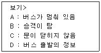
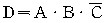
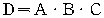
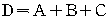
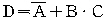
(정답률: 73%)
5. 그림에서 X 값은 "0101", Y 값은 "1101"이 입력될 때, 그 결과 값(F)는?
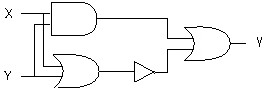
- 1100
- 0110
- 0111
- 0010
(정답률: 69%)
6. 다음 회로에서 1을 +5V, 0을 0V라 하면 A, B에 대한 출력 X는 어떤 논리회로가 되는가?
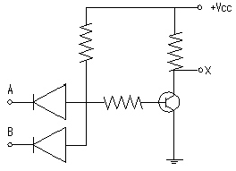
- NOR 회로
- NAND 회로
- OR 회로
- AND 회로
(정답률: 64%)
7. 초당 논리 연산 1회 수행을 의미하는 기호는?
- MFLOPS
- LIPS
- GFLOPS
- MIPS
(정답률: 66%)
8. 2진수 11001000의 2의 보수(Complement)는?
- 11001000
- 00111000
- 11001001
- 00110111
(정답률: 66%)
9. 명령어는 연산자 부분과 주소 부분으로 구성되는데 주소(Operand) 부분의 구성 요소가 아닌 것은?
- 데이터 종류
- 명령어 순서
- 데이터가 있는 주소를 구하는데 필요한 정보
- 데이터의 주소자체
(정답률: 58%)
10. 아래 보기와 같은 논리식은?
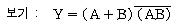
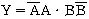
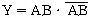
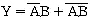
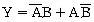
(정답률: 63%)
11. 16진수 5F 를 10진수로 변환하면?
- 85
- 95
- 100
- 96
(정답률: 74%)
12. 연산을 자료의 성격에 따라 나눌 때, 논리적 연산이 아닌 것은?
- COMPLEMENT
- AND
- MULTIPLY
- ROTATE
(정답률: 60%)
13. 전송 속도는 느리지만 동시에 많은 채널이 동작되도록 하며, 하나의 입·출력 채널을 이용하여 시분할로서 다수의 장치에서 데이터의 전송을 동시에 수행하도록 하는 채널은?
- 셀렉터 채널
- 출력 채널
- 입력 채널
- 멀티플렉서 채널
(정답률: 86%)
14. 누를 때마다 ON, OFF가 교차되는 스위치를 만들고자 할 때 사용되는 플립플롭은?
- D 플립플롭
- JK 플립플롭
- T 플립플롭
- RS 플립플롭
(정답률: 74%)
15. 다음 중 인터넷을 위한 네트워크 장비가 아닌 것은?
- 허브(Hub)
- 라우터(Router)
- 랜카드(LAN Card)
- 패킷(Packet)
(정답률: 60%)
16. 논리 마이크로 동작에서 비교 동작은 논리 함수 중 어느 것과 동일한 기능을 수행하는가?
- NAND
- AND
- XOR
- XNOR
(정답률: 40%)
17. 다음 명령어 형식 중에서 주소 부분이 없이 연산자만 존재하는 형식은?
- 2-주소 형식
- 3-주소 형식
- 0-주소 형식
- 1-주소 형식
(정답률: 74%)
18. 십진수 "-2001"을 팩 10진 연산(Packed Decimal) 표시법으로 나타내면?
- F2F0F0F1
- F2F0F0D1
- 0002001C
- 0002001D
(정답률: 51%)
19. 주소지정 방식 중 처리 속도가 가장 빠르며, 명령의 피연산자부에 피연산자의 주소가 있는 것이 아니라 피연산자의 값 그 자체를 포함하고 잇는 주소지정 방식은?
- 레지스터 지정(Register Addressing)
- 직접 주소 지정(Direct Addressing)
- 간접 주소 지정(Indirect Addressing)
- 즉시 주소 지정(Immediate Addressing)
(정답률: 68%)
20. 자기 테이프 장치에서 보다 많은 데이터를 저장하고, 처리 속도를 빠르게 하기 위한 방법은?
- 버퍼링
- 매핑
- 블록킹
- 스풀링
(정답률: 48%)
2과목: 패키지 활용
21. Windows용 프레젠테이션에서 화면 전체를 전환하는 단위를 의미하는 것은?
- 개요
- 개체
- 스크린 팁
- 쪽(슬라이드)
(정답률: 86%)
22. Windows용 프레젠테이션에서 프레젠테이션의 한 화면을 구성하는 개개의 요소들을 무엇이라고 하는가?
- 개요
- 슬라이드(Slide)
- 시나리오(Scenario)
- 개체(Object)
(정답률: 66%)
23. Windows용 스프레드시트의 기능과 거리가 먼 것은?
- 정렬 기능
- 동영상 처리 기능
- 자동 계산 기능
- 그래프 표현 기능
(정답률: 84%)
24. 데이터베이스 관리자(DBA)의 설명으로 가장 적합한 것은?
- 데이터베이스의 운용을 원할하게 하기 위해 설계된 데이터베이스 기계
- 데이터 조작어를 이용하여 데이터베이스의 응용이 가능한 사람
- 데이터베이스 관리 시스템의 관리 및 운영을 책임지는 사람
- 단말기에서 질의어를 이용하여 데이터베이스를 이용하는 사람
(정답률: 77%)
25. 엑셀에서 A2 셀, B3 셀, C3 셀을 선택하는 방법은?
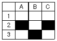
- A2 셀을 클릭하고 Ctrl키를 누른 상태에서 B3, C2 셀을 클릭한다.
- Ctrl 키를 누른 상태에서 A2 셀부터 C3 셀까지 드래그한다.
- Shift 키를 누른 상태에서 A2, B3, C3를 클릭한다.
- Shift 키를 누른 상태에서 행 번호 2를 클릭하고 B열을 클릭한다.
(정답률: 75%)
26. 기업체의 발표회나 각종 회의 등에서 빔 프로젝트 등을 이용하여 제품에 대한 소개나 회의 내용을 요약 정리하여 청중에게 효과적으로 전달하기 위한 도구를 의미하는 것은?
- 데이터베이스
- 프레젠테이션
- 스프레드시트
- 워드프로세서
(정답률: 88%)
27. Windows용의 다른 응용 프로그램에서 그림의 전체나 일부분을 잘라 자신이 사용중인 스프레드시트에 삽입하려고 한다. 이때 임시로 사용되는 장소를 무엇이라고 하는가?
- Sheet
- Class
- Clipboard
- SQL
(정답률: 77%)
28. DBMS의 장점이 아닌 것은?
- 데이터 공유
- 데이터 무결성 유지
- 데이터 중복성 최대화
- 데이터 보안성 보장
(정답률: 86%)
29. 스프레드시트에서 기본 입력 단위를 무엇이라고 하는가?
- 툴바
- 셀
- 탭
- 블록
(정답률: 87%)
30. 데이터베이스의 용어 중에서 가장 범위가 넓은 것부터 차례로 나열된 것은?
- 테이블 > 필드 > 레코드
- 테이블 > 레코드 > 필드
- 레코드 > 테이블 > 필드
- 필드 > 레코드 > 테이블
(정답률: 63%)
3과목: PC 운영 체제
31. 교착상태의 필수 조건이 아닌 것은?
- 적어도 하나의 자원을 보유하고 현재 다른 프로세스에 완성된 자원을 얻기 위해 기다리는 프로세스가 있어야 한다.
- 선점(Preemption)이어야 한다.
- 환상형 대기(Circular Wait)이어야 한다.
- 적어도 하나 이상의 자원이 공유되어야 한다.
(정답률: 64%)
32. 운영체제가 사용자에게 주는 메시지로서, 키보드로부터 입력이나 명령이 가능하다고 알리는 것을 의미하는 것은?
- 조회(Inquiry)
- 프롬프트(Prompt)
- 링크(Link)
- 로드(Load)
(정답률: 62%)
33. 컴퓨터 부팅시 반드시 필요한 도스(MS-DOS)의 시스템 파일로만 짝지어진 것은?
- MSDOS.SYS / CONFIG.SYS / AUTOEXEC.BAT
- IO.SYS / MSDOS.SYS / COMMAND.COM
- IO.SYS / MSDOS.SYS / CONFIG.SYS
- IO.SYS / CONFIG.SYS / AUTOEXEC.BAT
(정답률: 70%)
34. "Windows 98"에서 "시작" 단추의 문서 메뉴 목록을 삭제하는 방법은?
- 시작 메뉴의 설정 메뉴를 선택하여 제어판에서 프로그램추가/삭제를 선택한 후 해당 프로그램을 삭제한다.
- 내 컴퓨터에서 해당 문서를 찾아서 삭제한다.
- 작업 표시줄에서 등록정보를 선택한 후 시작 메뉴 프로그램에서 문서 메뉴 지우기를 선택한다.
- 시작 메뉴의 실행 중단에서 삭제한다.
(정답률: 52%)
35. "Windows 98"의 탐색기에서 연속된 여러 개의 파일을 선택할 때 첫 번째 파일을 선택 후, 마지막 파일 선택시 동시에 누르는 키는?
- Alt 키
- Shift 키
- Tab 키
- Ctrl 키
(정답률: 79%)
36. 도스(MS-DOS)에서 단편화되어 있는 파일의 저장 상태를 최적화하여 디스크의 작동 효율을 높이는 명령은?
- CHKDSK
- DISKCOMP
- DEFRAG
- DISKCOPY
(정답률: 41%)
37. 도스(MS-DOS)에서 파일명만 입력하면 실행 가능한 파일의 확장자가 아닌 것은?
- BAT
- SYS
- COM
- EXE
(정답률: 50%)
38. "Windows 98"에서 도스 프롬프트 상태로 부팅되게 하는 멀티 부팅 메뉴는?
- Normal
- Logged
- Step-by-step configuration
- Command Prompt Only
(정답률: 67%)
39. 컴퓨터 시스템을 구성하고 있는 하드웨어 장치와 일반 사용자에게 실행되는 응용 프로그램의 중간에 위치하여 컴퓨터 시스템을 제어하고 관리하는 프로그램은?
- Operating System
- Compiler
- Loader
- Interrupt
(정답률: 77%)
40. "Windows 98"에서 [제어판]의 기능과 관계 없는 것은?
- 새 하드웨어 추가
- 암호 변경
- 마우스 설정 변경
- 디스크 조각 모음
(정답률: 59%)
41. 도스(MS-DOS)에서 "ABC.DAT" 파일을 숨겨진 파일로 만드는 명령은?
- ATTRIB +H ABC.DAT
- ATTRIB +R ABC.DAT
- ATTRIB -H ABC.DAT
- ATTRIB -R ABC.DAT
(정답률: 66%)
42. UNIX 시스템에서 셸(Shell)에 대한 설명으로 옳은 것은?
- 프로세스 제어 및 프로세스간의 통신 시스템을 관리
- 사용자와 커널(Kernel)사이에서 중계자 역할을 해주는 명령어 해독기
- 입·출력 및 기억장치 관리
- 하드웨어를 관리하는 UNIX의 핵심 부분
(정답률: 63%)
43. "Windows 98"의 [보조 프로그램] 메뉴에 기본적으로 설치되어 있지 않은 것은?
- 메모장
- 계산기
- 프린터
- 시스템 도구
(정답률: 77%)
44. "Windows 98"에서 단축 아이콘에 대한 설명으로 옳지 않은 것은?
- 단축 아이콘의 확장자는 *.DLL이다.
- 단축 아이콘을 삭제해도 해당 프로그램에는 아무 상관이 없다.
- 단축 아이콘을 바탕화면에 만들어두면 해당 프로그램을 일일이 찾지 않고 바탕화면에서 직접 실행시킬 수 있어 편리하다.
- 단축 아이콘 이름은 원래 파일명과 달라도 관계가 없다.
(정답률: 69%)
45. "Windows 98"의 탐색기 창에서 파일에 대한 작업 후 탐색기 창에 변경된 내용이 나타나지 않을 수도 있다. 탐색기를 다시 열지 않고 변경된 내용을 보려면?
- 보기 메뉴의 아이콘 정렬을 선택한다.
- 툼 + 튤을 누른다.
- 툼 + 패를 누른다.
- 보기 메뉴의 새로고침을 선택한다.
(정답률: 60%)
46. 도스(MS-DOS)에서 COPY 명령어의 기능이 아닌 것은?
- COPY CON 명령을 이용하여 새로운 텍스트 파일을 만드는 기능
- 두 개 이상의 파일을 하나로 묶어주는 기능
- 파일이 바르게 작성되었는지 확인하는 기능
- 파일을 지정한 곳에 복사하는 기능
(정답률: 48%)
47. UNIX에서 ls-l 명령을 사용한 결과이다. 이 파일의 그룹 사용자에게 허용되지 않는 것은?
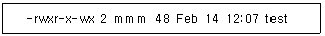
- 점검
- 읽기
- 실행
- 쓰기
(정답률: 51%)
48. Which of following is system call command to create a new process at UNIX?
- write
- open
- exec
- fork
(정답률: 47%)
49. Which of the following is correct answer about Batch Processing System?
- Data processing system which requires immediate process when the data generated like seat reservation for airplane or train.
- The method that process data collected until it become some quantity or for some period of thme at one time.
- A terminal like device equipped with button, that enables the operator to communicate with computer.
- The system which has many processors is to program dividing into more than two jobs concurrently under control processors.
(정답률: 63%)
50. 운영체제(OS)의 목적과 거리가 먼 것은?
- 성능의 향상
- 응답시간의 단축
- 단위 작업량의 소형화
- 신뢰성 향상
(정답률: 72%)
4과목: 정보 통신 일반
51. PCS 통신에 대한 설명으로 적합하지 않은 것은?
- 개인 휴대 통신이라고 한다.
- 서비스 지역은 옥내, 옥외 모두 가능하다.
- 이동중에만 통화가 가능하다.
- 접속 매체는 유선, 무선으로 되어 있다.
(정답률: 71%)
52. 데이터통신에서 변조와 복조를 수행하는 장비는?
- 브리지(Bridge)
- 허브(Hub)
- 패드(Pad)
- 모뎀(MODEM)
(정답률: 72%)
53. 데이터통신 방식의 에러 체크 방식으로서 우수 패리티 체크 방식은 1개 블록중에서 수평에 대한 1의 수를 어떻게 하고 있는가?
- 5개가 되도록 한다.
- 짝수가 되도록 한다.
- 홀수가 되도록 한다.
- 0이 되도록 한다.
(정답률: 57%)
54. 우리 나라 이동전화 시스템인 CDMA 방식의 뜻은?
- 콤펙트 디스크 다중 접속 방식
- 채널 분할 다중화 방식
- 캐리어 변·복조 방식
- 코드분할 다중 접속 방식
(정답률: 67%)
55. 회선망 구성에 있어서 10개의 스테이션(국)을 전부 망형 회선망으로 구성하려면 몇 회선이 필요한가?
- 45회선
- 65회선
- 25회선
- 85회선
(정답률: 72%)
56. 가입자가 시간에 관계없이 특정한 프로그램을 선택하여 시청할 수 있으며, 마치 VCR을 자유로이 조작하듯 시청 도중에 플레이(재생), 되감기, 일시정지, 녹화 등이 가능한 뉴미디어 서비스를 무엇이라 하는가?
- HDTV
- MPEG
- CATV
- VOD
(정답률: 64%)
57. 다음 중 정보(情報)의 개념과 의미와 관련이 먼 것은?
- 인포메이션(Information)
- 패턴(Pattern)
- 인텔리전스(Intelligence)
- 데이터(Data)
(정답률: 61%)
58. 임의 접속 방식이 순서 접속 방식보다 가장 유리한 점은?
- 가격이 저렴해진다.
- 접속 시간이 매우 짧아진다.
- 기억 용량을 크게할 수 있다.
- 정보가 기억된 위치에 따라서 접속 시간이 다르다.
(정답률: 58%)
59. 비동기식 전송의 특징이 아닌 것은?
- 보통 2,000[bps] 이하의 속도에서 이용된다.
- 타이밍 신호가 Modem에서 공급된다.
- 직렬 펄스로 전송된다.
- 스타트, 스톱 비트가 동기를 유지한다.
(정답률: 40%)
60. 단말기간의 데이터 전달의 기본 5단계를 순서대로 열거한 것이다. 옳은 것은?
- 회선연결-링크단절-메시지전달-링크확립-회선단절
- 링크확립-회선연결-메시지전달-회선단절-링크단절
- 링크확립-회선단절-메시지전달-회선연결-링크단절
- 회선연결-링크확립-메시지전달-링크단절-회선단절
(정답률: 60%)